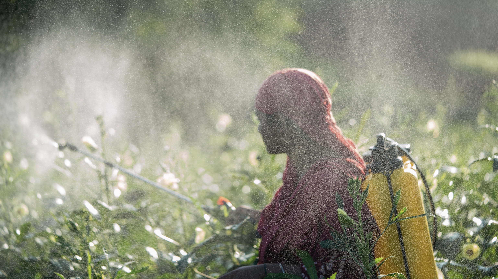

Por que Agricultura Sustentável?
A agricultura sustentável busca equilibrar a produção de alimentos com a preservação ambiental e justiça social.
Com a população mundial crescendo e os recursos naturais se esgotando, precisamos de soluções inteligentes que:
- Reduzam o uso de água e pesticidas
- Aumentem a produtividade sem expandir áreas cultivadas
- Preservem a biodiversidade e a saúde do solo
- Melhorem a qualidade de vida dos agricultores
- Garantam segurança alimentar para as futuras gerações
Tecnologias Transformadoras
A agricultura 4.0 está revolucionando o campo com soluções inteligentes e sustentáveis:
Agricultura de Precisão
Sensores e GPS para otimizar insumos e irrigação
Drones Agrícolas
Monitoramento aéreo e aplicação precisa de defensivos
IoT no Campo
Sensores conectados monitoram solo, clima e plantas
Big Data Agrícola
Análise de dados para tomada de decisão inteligente
Benefícios da Agricultura Sustentável
Eficiência Hídrica
Sistemas de irrigação inteligente reduzem o consumo de água em até 50%, preservando recursos hídricos.

Redução de Agrotóxicos
Técnicas como controle biológico e monitoramento digital diminuem a necessidade de defensivos químicos.
Energia Renovável
Uso de energia solar, biogás e outras fontes limpas reduzem a pegada de carbono da produção agrícola.

Agricultura Urbana
Tecnologias como hidroponia e fazendas verticais trazem produção local para centros urbanos.

Casos de Sucesso no Brasil
Sistema ILPF
Integração Lavoura-Pecuária-Floresta aumenta produtividade e recupera solos
Apps para Agricultores
Soluções como AgroClima e Plantio Certo ajudam no planejamento agrícola
Robótica Agrícola
Robôs para colheita e monitoramento reduzem custos e aumentam precisão
Energia Solar
Fazendas solares fornecem energia limpa para propriedades rurais
Como Implementar na Sua Propriedade
Comece sua transição para a agricultura sustentável com tecnologia:
- Faça um diagnóstico da sua propriedade
- Comece com tecnologias de baixo custo (como apps e sensores simples)
- Busque capacitação e assistência técnica
- Aproveite linhas de crédito para agricultura sustentável
- Monitore resultados e ajuste continuamente